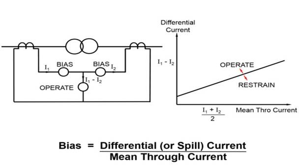

Experiment - 10
To study the differential protection of a three phase delta-delta connected transformer.
- Three phase delta-delta connected tranformer.
- CTs
- Relay

Differential Protection
A transformer is a static device totally enclosed and generally oil-immersed. Thus, chances of fault occurrence on them are rare. However, consequences even so, could be very serious unless the transformer is quickly disconnected from the system.
Power transformers are classified as one of the most valuable equipment in a power system, hence their protection is of very high importance. The transformer differential protection provides fast tripping in case of a fault - before severe damage spreads out. Such faults are:
• short circuits between turns, windings and cables inside the transformer housing
• earth faults inside the housing
• Short circuits and earth faults outside the housing but within the protected zone (e.g. at bushings or supply lines).

Diagram of Biased Differential Protection
A differential relay is one that operates when the phase difference between the two or more similar electrical quantities exceeds a pre-determined value.
- The differential relay is one that compares the current entering a section of the system with that leaving the section. Under normal operating conditions or external fault (fault falling out-of-zone) the two currents are equal but as soon as some internal fault occurred this condition of equality of the two current ceased to be true. Then, the difference b/w the incoming and outgoing current is arranged to flow through the operating coil of the relays. If this differential current is equal to or greater than the pickup valve the relay will operate and open the circuit breaker to isolate the fault-section. The different problems in differential protection of transformer are:
• Current Mismatch Caused by the Transformation Ratio
• Due to possible mismatch of ratios among different current transformers.
• Delta Wye Transformation of Currents
• •Zero Sequence Elimination
• Phase differences between primary and secondary side, caused by transformer vector groups, have to be duly considered.
• Switching operations in the grid have to be recognized as such.
• Inrush currents of the transformer must not result in maloperation.
Connection of interposing C.T.s is dependent on the vector group of the power transformer. For instance, for transformers with star (Y) windings the interposing C.T.s are connected in delta (?) to reject residual currents (i.e. currents flowing to the transformer due to an earth fault outside the protected zone and which would produce a differential current Id) and to prevent mal-operation of the differential protection.